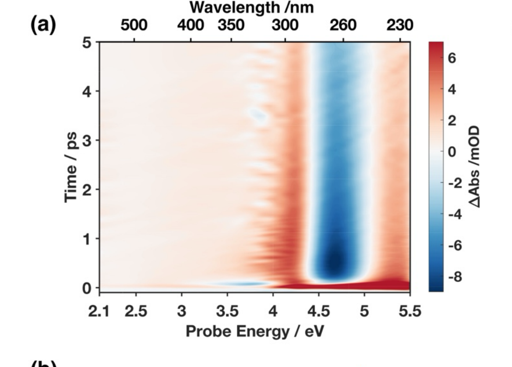

        <section>
          <h3 style="margin: 0 0 0.35em;">Why the Extra Bandwidth Matters</h3>
          <div style="display: flex; gap: 1.2em; align-items: center;">
            <div style="flex: 1.7; min-width: 0; position: relative;">
              
              <div class="fragment fade-out"
                   style="position: absolute; left: 53.2%; top: 16%; width: 25%; height: 60%;
                          background: #ffffff; border-left: 1px solid #ddd;"></div>
            </div>
            <div style="flex: 1.8; font-size: 0.40em;">
              <div class="col-box" style="border: 1px solid #ddd; border-radius: 8px; padding: 0.7em 0.9em;">
                <ul style="margin: 0; padding-left: 1.2em;">
                  <li>A conventional probe (&gt;300 nm) only sees the bleach and hot ground state</li>
                  <li>Click: the excited-state and twisted-intermediate signals live below 4 eV</li>
                </ul>
              </div>
            </div>
          </div>
          <p class="slide-footnote"><a href="https://doi.org/10.1021/acs.jpclett.5c04072">Godínez Castellanos <em>et al.</em>, <em>J. Phys. Chem. Lett.</em> <strong>17</strong>, 2634&ndash;2643 (2026)</a></p>
          <aside class="notes">
            <ul>
              <li>4.64 eV pump, ~10 mM DMU in water. This is the full contour over the first 5 ps.</li>
              <li>The point of the reveal: a standard CaF2/sapphire supercontinuum probe (limited to &gt;300 nm / &lt;4.1 eV) would only ever see the ground-state bleach and hot-ground-state absorption on the right side of this map. The entire left-hand story — excited-state decay, twisted intermediate rise and decay — lives in the extended deep-UV-to-visible bandwidth that only the soliton probe supplies.</li>
              <li>Click to reveal the full map before moving to the next slide, which breaks out the spectral slices (b) and kinetic traces (c) in detail.</li>
            </ul>
          </aside>
        </section>
